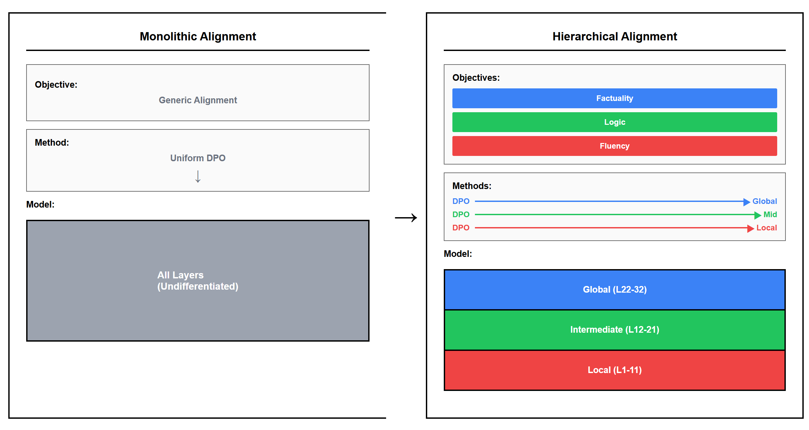

🔍 大模型的可解释性研究系列
从结构发现到动态控制：构建透明、可控的语言模型
我们提出了一个完整的理论体系，回答了四个关键问题：
- Q1: 大模型内部是否有规律结构？→ MSPGT
- Q2: 不同层级是否承担不同功能？→ Hierarchical Alignment
- Q3: 能否在不同尺度间建立映射？→ MSMA
- Q4: 表示轨迹如何影响生成质量？→ DMET
下面是我们一步步揭开黑箱的旅程👇
1. MSPGT：多尺度生成理论
核心问题：为什么大模型会自发形成三层语义结构？
我们提出 Multi-Scale Probabilistic Generation Theory (MSPGT)，将 LLM 视为一个分层变分信息瓶颈系统。该理论预测存在三个语义尺度：
- Local：词汇/语法处理
- Intermediate：句法/逻辑控制
- Global：主题/事实一致性
通过多信号融合方法（CKA + 探针 + 注意力漂移），我们在 Llama/Qwen 上验证了以下预测：
- ✅ 同家族模型 L-I 边界高度一致
- ✅ 中间层扰动显著破坏句子结构
- ✅ 局部脆性随架构变化巨大
这项工作为后续的“结构感知对齐”提供了理论基础。
2. Hierarchical Alignment
核心问题：能否基于层级分工进行精准对齐？
现有对齐方法（如 DPO）常导致“对齐税”——流畅但逻辑差。我们提出分层对齐策略，仅对特定功能块微调：
- Local-Align：提升语法流畅性 (+0.52 胜率)
- Global-Align：提升事实一致性和逻辑连贯性 (+0.10)
实验证明，这种“手术式”微调不仅更有效，还能避免对齐税。
这是首次系统验证“高层负责推理”的假设，并展示了如何利用内部结构实现更优对齐。
3. MSMA：多尺度流形对齐
核心问题：如何在不同语义尺度之间建立精确映射？
我们在前两篇基础上，构建了从局部到全局的跨尺度表示对齐框架（MSMA）。通过最小化 KL 散度、最大化互信息、正则化曲率，实现近乎完美的流形对齐：
- 🔹 KL 散度下降 99%
- 🔹 互信息提升 5–7 倍
- 🔹 距离相关性 ≈ 1.0
该框架允许我们在不同粒度上精细控制：
- 修改局部表示 → 改变词汇选择
- 调整中间层 → 影响句子结构
- 编辑全局向量 → 控制话语连贯性
MSMA 为偏差缓解、鲁棒性增强和可控文本生成提供新路径。
4. DMET：动态流形演化理论
核心问题：表示轨迹如何决定生成质量？
我们将生成过程视为在语义流形上的连续轨迹演化，定义三个动态指标：
C (Continuity) → 光滑度 → 预测流畅性
Q (Quality) → 吸引子紧凑性 → 预测语法一致性
P (Persistence) → 拓扑持久性 → 预测长程连贯性
Q (Quality) → 吸引子紧凑性 → 预测语法一致性
P (Persistence) → 拓扑持久性 → 预测长程连贯性
我们发现：
- 温度 $\tau$ 和 top-$p$ 可调节轨迹形态
- 存在“黄金区域”$\tau \in [0.7,1.0], p \in [0.6,0.8]$ 实现最佳平衡
- 不同模型有独特“动态指纹”：Qwen2（紧凑）、Llama2（复杂）、DeepSeek-R1（均衡）

DMET 为生成控制提供了理论指导，真正实现了“按需定制输出”。
🔬 研究脉络总结
我们的研究遵循 “发现 → 利用 → 连接 → 控制” 的科学范式：

从静态结构到动态演化，逐步建立起对大模型内部机制的可预测、可干预、可控制的理解体系。